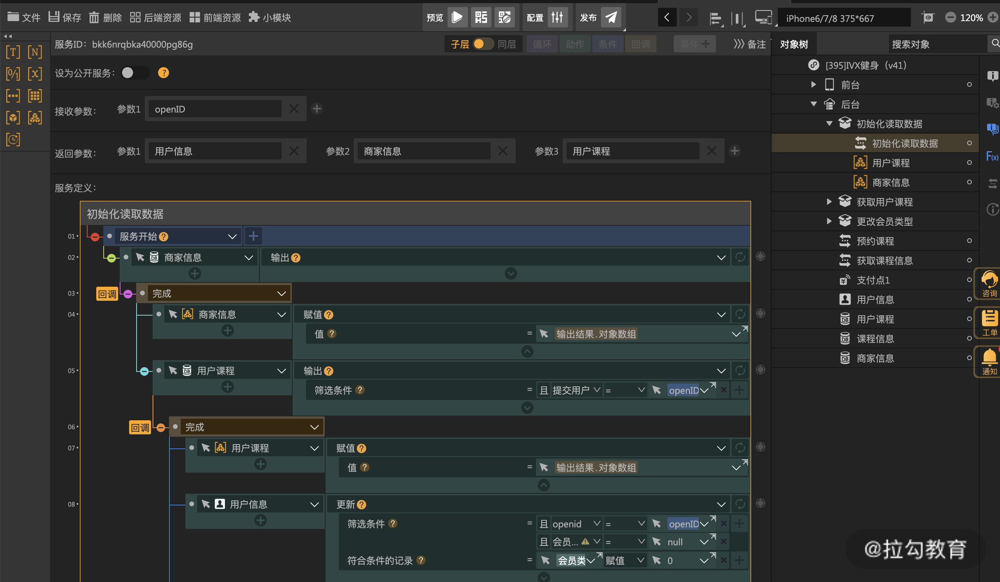

- 00 开篇词 建立上帝视角，全面系统掌握前端效率工程化.md.html
- 01 项目基石：前端脚手架工具探秘.md.html
- 02 界面调试：热更新技术如何开着飞机修引擎？.md.html
- 03 构建提速：如何正确使用 SourceMap？.md.html
- 04 接口调试：Mock 工具如何快速进行接口调试？.md.html
- 05 编码效率：如何提高编写代码的效率？.md.html
- 06 团队工具：如何利用云开发提升团队开发效率？.md.html
- 07 低代码工具：如何用更少的代码实现更灵活的需求.md.html
- 08 无代码工具：如何做到不写代码就能高效交付？.md.html
- 09 构建总览：前端构建工具的演进.md.html
- 10 流程分解：Webpack 的完整构建流程.md.html
- 11 编译提效：如何为 Webpack 编译阶段提速？.md.html
- 12 打包提效：如何为 Webpack 打包阶段提速？.md.html
- 13 缓存优化：那些基于缓存的优化方案.md.html
- 14 增量构建：Webpack 中的增量构建.md.html
- 15 版本特性：Webpack 5 中的优化细节.md.html
- 16 无包构建：盘点那些 No-bundle 的构建方案.md.html
- 17 部署初探：为什么一般不在开发环境下部署代码？.md.html
- 18 工具盘点：掌握那些流行的代码部署工具.md.html
- 19 安装提效：部署流程中的依赖安装效率优化.md.html
- 20 流程优化：部署流程中的构建流程策略优化.md.html
- 21 容器方案：从构建到部署，容器化方案的优势有哪些？.md.html
- 22 案例分析：搭建基本的前端高效部署系统.md.html
- 23 结束语 前端效率工程化的未来展望.md.html
- 捐赠
08 无代码工具：如何做到不写代码就能高效交付？
在开始今天的课程前，我们先来简单回顾下上节课的思考题：低代码工具主要面向什么样的用户群体呢？低代码工具本质上是对组件化开发流程的简化，但在开发过程中，仍然可能进行编码调试。因此，它面向的用户群体应该是具有一定技术基础的开发人员，专业的后端开发也可以使用这类工具来快速开发项目中的前端功能。
在介绍低代码开发的时候，经常伴随出现另一个名词：无代码开发。今天我们就来近距离地了解这种开发模式的相关知识。
无代码开发模式的出现
在讨论无代码开发之前，我们先来看下这种开发模式出现的原因：
- 有需求量大且更新频率快的小型项目：例如不同主题内容的运营活动页面、招聘页面等。
- 这些项目流程模式基本相同但又具有一定的定制性：例如一个优惠券活动，需要投放到不同城市，因此文案内容、图片背景和优惠券金额等都可能不同。
- 开发人员成本昂贵，供不应求：尽管开发人员可以通过代码复用等方式来提升开发类似代码的效率，但是总体而言这类简单项目从定制开发到上线的流程，仍然以天为单位，在面对大量雷同的项目时，开发效率仍不能满足用户方的需求。
- 非互联网企业缺少技术资源：许多非互联网中小型企业内部缺少完整的技术团队，无法通过自身技术资源解决日常的互联网开发需求。
无代码开发模式正是为这些问题而量身定制的。
无代码开发介绍
无代码开发（No-Code Development / Codeless Development）是指通过非手写代码工具来产出代码的方式。这类工具被称为：无代码开发平台（No-Code Development Platform，NCDP）。
无代码开发和低代码开发的区别
从下面的表格中可以看到无代码开发和低代码开发的主要区别，包括目标人群、目标产品、开发模式等 7 个维度。
| 区别维度 | 低代码开发 | 无代码开发（面向非开发） | 无代码开发（面向准开发） |
|---|---|---|---|
| 目标人群 | 主要面向有一定技术基础的开发人员 | 主要面向非开发岗位人员（例如运营人员，设计人员） | 主要面向准开发人员（对开发思维的需求随项目难度递增） |
| 目标产品 | 主要为 B 端中后台 | 主要为 C 端活动或 H5 | 结合前两者 |
| 开发模式 | 编写 JSON/操作图形化交互平台（偏重前端） | 操作图形化交互平台（偏重前端） | 操作图形化交互平台（前端到后端） |
| 基础设施 | 通用的组件库与渲染流程 | 典型的页面/项目模板，以及与视觉呈现相关的组件 | 前后端组件 |
| 可自由定制的内容 | 组件的选择、布局、属性、数据、交互 | 可视化数据（文本、媒体、动画等）的编辑 | 前端可视化数据，后端数据与逻辑功能等 |
| 数据接口 | 通常由独立后端单独开发提供 | 无数据接口，或通常由平台方提供标准化的接口 | 基于云基础设施的数据功能 |
| 部署 | 可单独部署 | 通常由平台方提供云服务部署 | 通常由平台方提供云服务部署 |
其中，可以把市面上的无代码开发模式进一步细分为两类：
- 一类完全面向非开发人员，如百度 H5，对应开发的目标产品主要是模式化的 C 端活动与其他 H5 页面类型（例如招聘页面，测试小游戏等）；
- 另一类面向准开发人员，即缺少代码经验且希望开发全栈产品的个人或团队，在目标产品和定制功能上更全面，但是相应的学习使用成本也更高，这类产品以 iVX 为代表。
下面，我们就来进一步了解下这两种开发模式的异同。
典型产品分析
面向非开发人员的无代码开发产品
这类产品的设计目标就是将一些固定类型的项目生产流程，由代码开发转变为操作图形化交互工具。
企业内部的定制化搭建平台
例如面向 C 端的企业经常会有推广拉新的开发需求，以红包活动为例，如果按照普通的代码开发流程，需要经历以下 6 个流程才能最终上线：
- 产品确定活动流程，交付产品文档与原型。
- 设计师设计页面，交付设计稿。
- 前端工程师开发活动的前端代码。
- 后端工程师开发活动的后端代码。
- 前后端联调后交付测试。
- 测试通过后部署上线。
这类活动通常是可复用的，然而针对不同时间段，或者同一时间段的不同推广渠道和推广地区，通常需要提供模式相同但外观与数据（例如红包金额）不同的活动产品，于是当需要复用时，会发现除了产品交付的流程不用变更外，后续所有开发部署流程都难以避免。这导致开发资源被低效地占用，生产效率也无法进一步提升。
而无代码开发产品可以完美地解决这一类问题，针对同一类型的活动项目，前后端工程师可以开发出对应的可视化活动搭建平台，提供：
- 选择活动类型并预览效果的功能。
- 文本、图片、活动金额、上下线时间等元素替换功能。
- 数据统计等辅助模块。
这种方法通过一次开发，即可让运营人员长期重复使用，解放了后续的开发资源，并且从流程上将普通项目开发的 6 个环节简化为两个环节：设计师设计页面，以及运营人员无代码地编辑内容。这将原先以天为单位的开发部署时间，缩短为以分钟为单位的编辑生成时间。
以上便是企业内部无代码开发的一类应用场景。
外部无代码搭建平台
另一类面向非开发人员的无代码开发产品，针对的是缺乏开发资源的企业和部门。对于一些常见的小型项目需求，例如招聘页面、报名页面等，它们往往需要借助外部提供的无代码开发平台。这类无代码开发平台包括百度 H5、MAKA、易企秀等。

百度 H5 编辑界面
这类产品的特点是：
- 场景类型固定：通常提供一些企业常见类型页面生成（招聘介绍、报名表单、宣传活动、答题测试等）。
- 设计模板丰富：通常都提供了大量经过设计的页面模板供用户选择，部分平台还提供了第三方设计师设计与发布设计模板的功能。
- 定制化功能多样：除了常见的文本和图片类型外，这类产品的 IDE 中通常还包含了媒体、表单、动画等多维度编辑功能。
- 后端功能较少：产品形态大多是纯前端的，即使涉及后端数据，例如表单提交，也只提供了基于云平台的上报数据统计，在 IDE 中没有自定义后端接口和数据字段的部分，这也和使用人群的定位一致。
- 部署在云端：通常都提供免费或收费的云端部署方案，以降低用户运维难度和操作成本。
- 使用人群细化：使用人群进一步分化为设计师与普通使用者。对于普通使用者而言，除了开发资源外，通常也不具备设计资源。于是设计师就可以使用平台提供的 IDE 工具，发布付费设计模板，供普通使用者选择。
面向准开发人员的无代码开发产品
而面向准开发人员的无代码开发产品，则有以下几点不同：
- 更为多样化的应用场景：同上述面向非开发人员的产品相比，这类产品最主要的功能是提供了描述性的后端的数据与功能模块，因此能够实现的应用场景也更为多样化和通用化。以 iVX 为例，可实现的应用场景从上面的 C 端产品扩展到了 B 端产品，包括：小程序、小游戏、H5、营销活动，BPM、OA、CRM、ERP，企业中台，BI、大屏幕等。

iVX 编辑器中后端逻辑描述面板
- 目标人群的变化：应用场景扩展对应的是 IDE 功能的复杂化和操作学习成本的增加，于是目标人群也多少有些不同：
- 从一方面来看，这种功能增强型的无代码模式能够吸引更多有产品思维但缺少实际开发经验的个人或缺少开发资源的团队尝试使用，例如外包团队或早期创业团队。
- 但从另一方面看，要开发一个具有一定复杂度的项目，对开发人员的要求不只体现在代码能力方面，还需要开发人员对产品、全栈架构与交互逻辑层面有一定的认识和理解。无代码平台主要解决的是前一个层面的问题，对于后者，则仍然受到使用者的技术经验限制。这也在一定程度上也会造成无形的使用壁垒。
- 此外，使用者对这类全新的开发工具和流程的开发经验的掌握，很难迁移到其他开发工具和流程中，这也可能使使用者产生是否值得学习这类工具的疑虑。也许直到这类产品在市场中得到充分的验证，培养出足够多的使用者和需求方后，才能真正解决担忧。
总结
这节课我们介绍了和低代码开发对应的另一种开发模式：无代码开发。首先我们对比了两种开发模式不同维度的区别，又进一步介绍了无代码开发的两种不同方向：面向非开发人员的产品与面向准开发人员的产品。
面向非开发人员的无代码开发在企业内部与外部都有相应的应用场景：在企业内部我们可以将一些频率高的常用简易开发流程，固化为无代码开发产品，供运营或其他岗位人员使用；而在企业外部，也有不少免费或收费的无代码平台，将开发工具提供给缺乏技术资源的企业与个人；同时，设计师也可以在这类平台上制作自己的设计模板提供给用户。
面向准开发人员的无代码产品相比之下具有更广泛的使用场景，通过提供后端数据与逻辑的描述功能，用户可以通过 IDE 开发出具备前后端数据交互的复杂应用，进一步减少与普通代码开发的功能边界的差距。但相对的，要利用工具实现复杂应用，对用户的学习成本和思维培养也是一种新的挑战。究竟这种模式是否能被更多企业所接受，成为代码开发模式的替代呢？让我们拭目以待。
通过这一课，希望作为前端工程师的你能够在工作中考虑无代码开发的第一种应用场景，在合适的场景下开发相应的工具，来解放团队的开发资源，提升效率。而对于外部的无代码开发平台，如果感兴趣，希望你进一步了解，或许能对普通代码开发的模式有所借鉴。
最后，随着这一课的结束，我们就完成了开发效率篇的所有课程。今天的思考题是回顾本模块的内容，学会在工作中运用，如有疑问，欢迎你写在留言区。
下节课我们将进入第二个模块：构建效率篇。一起深入了解你所使用的构建工具中有哪些影响效率的知识点。
© 2019 - 2023 Liangliang Lee. Powered by gin and hexo-theme-book.